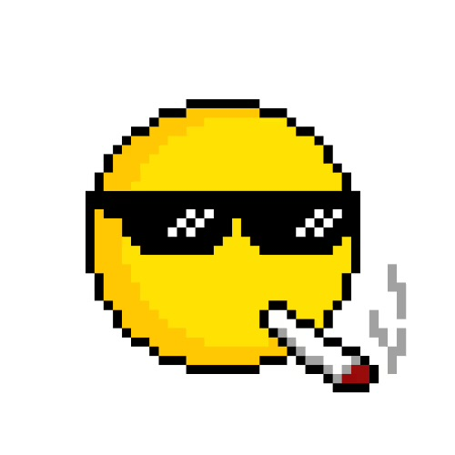

The No Project
Founded By MatthewGotLost (discord)
Team

MatthewGotLost
Founder
MatthewGotLost founded The No Project as MMgames9292 but he lost access to the account and switched to MatthewGotLost. The No Project started as something Matthew would do for fun in his free time because he was bored. He decided to go to his friend, Dino, and tell him about the project to which Dino joined The No Project and became the Co Founder & Lead Developer in the project.

Dino (aka on15ms. On discord)
Co Founder & Lead Developer
Dino is a friend of MatthewGotLost. He was contacted by Matthew and became the Co Founder & Lead Developer on the project. Ever since then, he has done a lot for The No Project. He compiled the code into an exe when it was batch code (Matthew compiled the python code to exe in later versions). He also developed the 2026 version of the “No” discord bot and hosted it himself. He has helped develop many No Batch & Python versions.